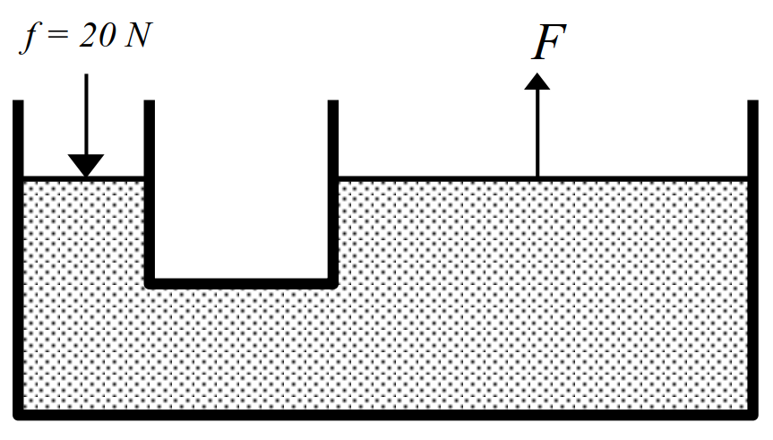

مثالهای تستی فصل دوم
حالت ماده
مثال 58 کدام یک از موارد زیر در مورد جامدهای بیشکل (آمورف) صحیح است؟
- مجموعههای تکراری مشابه در وضعیت مولکولهای آن دیده نمیشود.
- فلزها از این نوع جامدها هستند.
- فاصلههای مولکولی در آنها خیلی بیشتر از جامدهای بلوری است.
- در اثر سرد کردن تدریجی مایعها به وجود میآیند.
نمایش پاسخ
گزینه ۱مثال 59 تراکم ناپذیری مایعات بیان کننده کدام واقعیت است؟
- فاصله بین اتمهای مایع همیشه مقداری ثابت است.
- بین اتمهای مایع همیشه دافعه برقرار میشود.
- اگر فاصلهی بین مولکولهای مایع کم شود نیروی دافعه بین مولکولها به وجود میآید.
- اتمهای مایع تشکیل شبکه بلوری دادهاند.
نمایش پاسخ
گزینه ۳مثال 60 پخش شدن بوی عطر در فضای اتاق کدام یک از موارد زیر را نشان میدهد؟
- حرکت آزادانه مولکولهای هوا به اطراف
- فاصلهها زیاد بین مولکولهای هوا
- پایین بودن گرمای نهان تبخیر عطر
- وجود جریان هوا در اثر پدیده همرفتی
نمایش پاسخ
گزینه ۱کشش سطحی
مثال 61 بعضی از حشرات میتوانند روی آب راه بروند این عمل نشان دهندهی کدام است؟
- چرب بودن پای حشرات
- کوچکی پای حشرات
- کشش سطحی
- فشار هوا
نمایش پاسخ
گزینه ۳اثر ترشوندگی
مثال 62 اگر چند قطره کوچک آب روی سطح شیشه چرب بریزیم آب \(\dots\) زیرا نیروی دگر چسبی \(\dots\) از نیروی همچسبی است.
- به صورت کروی در میآید - بیشتر از
- بصورت کروی در میآید - کمتر از
- روی سطح پهن میشود - بیشتر از
- روی سطح پهن می شود کمتر از
نمایش پاسخ
گزینه ۲موئینگی
مثال 63 سطح داخل یک لوله شیشهای چرب است. اگر لوله در داخل آب فرو رفته باشد کدام شکل وضعیت آب داخل لوله را به درستی نشان میدهد؟
\[ \text{1. }\overset{|\quad|}{\underset{\large|\frown|}{\dashv\quad\vdash}}\quad \text{2. }\overset{\large|\frown|}{\underset{|\quad|}{\dashv\quad\vdash}}\quad \text{3. }\overset{|\quad|}{\underset{\large|\smile|}{\dashv\quad\vdash}}\quad \text{4. }\overset{\large|\smile|}{\underset{|\quad|}{\dashv\quad\vdash}}\quad \]
نمایش پاسخ
گزینه ۱مثال 64 بالا رفتن آب در لوله موئین تا وقتی ادامه پیدا مییابد که \(\dots\)
- نیروی همچسبی بین مولکولهای آب بیشتر از کشش سطحی شود.
- نیروی دگر چسبی بین مولکولهای آب و ظرف با وزن ستون آب برابر شود.
- نیروی هم چسبی بین مولکولهای آب با نیروی دگر چسبی برابر شود.
- نیروی هم چسبی بین مولکولهای آب با وزن ستون آب برابر شود
نمایش پاسخ
گزینه ۲فشار جامد
مثال 65 دو مکعب تو پر فلزی \(A\) و \(B\) روی یک سطح افقی قرار دارند. اگر طول هر ضلع مکعب \(A\) دو برار طول ضلع مکعب \(B\) و چگالی آنها به ترتیب \(\rho_A = 8 \frac{g}{cm^3}\) و \(\rho_B = 6 \frac{g}{cm^3}\) باشد فشاری که مکعب \(A\) به سطح وارد میکند چند برابر فشار مکعب \(B\) است.
- \(\frac{1}{3}\)
- \(\frac{2}{3}\)
- \(\frac{4}{3}\)
- \(\frac{8}{3}\)
نمایش پاسخ
\[ \require{cancel} \begin{aligned} \frac{P_A}{P_B} & = \frac{\rho_A \times h_A}{\rho_B \times h_B} \\ & = \frac{8 \times \cancel{2}}{\cancelto{3}{6} \times 1} \\ & = \boxed{\frac{8}{3}} \end{aligned} \]مثال 66 مکعب مستطیلی دارای ابعاد \(20 \times 10 \times 6 cm\) و چگالی \(3\frac{g}{cm^3}\) است. بیشترین فشاری که این مکعب میتواند برسطح وارد کند چند پاسکال است؟ \((g = 10 \frac{N}{kg})\)
- \(1800\)
- \(3000\)
- \(3600\)
- \(6000\)
نمایش پاسخ
\[ \require{cancel} \begin{aligned} P_{max} & = \rho g h_{max} \\ & = 1000 \times 10 \times 0.2 \\ & = \boxed{2000 Pa} \end{aligned} \]مثال 67 در شکل مقابل داخل لوله آب باشد، اختلاف فشار در مخزن گاز \(A\) و \(B\) چند پاسکال است. \((\rho_{w} = 1 \frac{g}{cm^3},\; g = 10 \frac{N}{kg})\)

- \(20\)
- \(200\)
- \(2000\)
- \(20000\)
نمایش پاسخ
\[ \require{cancel} \begin{aligned} P_{A} - P_{B} & = \rho g h \\ & = 3000 \times 10 \times 0.20 \\ & = \boxed{6 \times 10^{3} Pa} \end{aligned} \]مثال 68 در شکل مقابل فشار گاز مخزن چند کیلو پاسکال است؟ \((\rho_{Hg} = 13.6 \frac{g}{cm^3},\; g = 10 \frac{N}{kg}, \; P_0 = 76 cmHg)\)

- \(10^2\)
- \(10^3\)
- \(10^4\)
- \(10^5\)
نمایش پاسخ
\[ \require{cancel} \begin{aligned} P_{0} & = P_{1cmHg} + P_{source} \\ P_{source} & = \cancelto{P_{75cmHg}}{P_{0}} - P_{1cmHg} \\ & = \rho_{Hg} \times g \times h \\ & = \cancelto{\overset{\pm 3\%}{\cong} 14000}{13600} \times 10 \times 0.75 \\ & = 1.05 \times 10^{5} \\ & \simeq \boxed{10^{5} Pa} \end{aligned} \]فشار مایع
مثال 69 در شکل مقابل شعاع قاعده استوانه بزرگ ۱۰ برابر شعاع قاعده استوانه کوچک است. اگر نیروی ۲۰ نیوتن به سطح قاعده کوچک وارد شود. چه نیرویی به سطح قاعده پیستون بزرگ وارد میشود؟

- \(20000\)
- \(2000\)
- \(200\)
- \(20\)
نمایش پاسخ
\[ \require{cancel} \begin{aligned} \frac{f}{a} & = \frac{F}{A} \\ \frac{\cancelto{20}{f}}{\cancel{\pi} \bcancel{r^2}} & = \frac{F}{\cancel{\pi} \cancelto{100 \bcancel{r^2}}{R^2}} \\ F & = \boxed{2000 N} \end{aligned} \]مثال 70 در شکل مقابل تحمل سطح قاعده ظرف \(11 N\) است. و درون آن تا ارتفاع \(40 cm\) آب وجود دارد. تا چه ارتفاعی روغن به چگالی \(0.8\frac{g}{cm^3}\) اضافه شود تا ظرف نشکند؟ \((\rho_{water} = 1 \frac{g}{cm^3}, g = \frac{N}{kg}, A = 25 cm^2)\)

- \(5cm\)
- \(10cm\)
- \(15cm\)
- \(20cm\)
نمایش پاسخ
\[ \require{cancel} \begin{aligned} P & = \frac{F}{A} \\ F & = PA \\ & = \rho g h A \\ F & = F_{1_{water}} + F_{2_{oil}} \\ & = \rho_{1} g h_1 A + \rho_2 g h_2 A \\ 11 & = 1000 \times 10 \times 40 \times 10^{-2} \times 25 \times 10^{-4} + 800 \times 10 \times h_2 \times 25 \times 10^{-4} \\ 11 & = 10 + 20 h_2 \\ 1 & = 20 h_2 \\ h_2 & = \frac{1}{20} = 0.05 m = 5 cm \end{aligned} \]فشار گاز
مثال 71 ارتفاع برج میلاد \(435 m\) است. اگر چگالی هوا \(1. 3 \frac{kg}{m^3}\) ثابت فرض شود. اختلاف فشار هوا در بالا و پایین برج چند پاسکال است. \((g = 9.8 \frac{N}{kg})\)
- \(4391\)
- \(5391\)
- \(5631\)
- \(8391\)